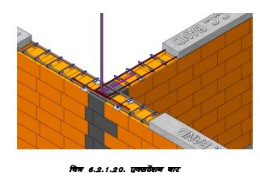
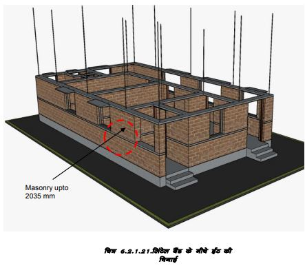
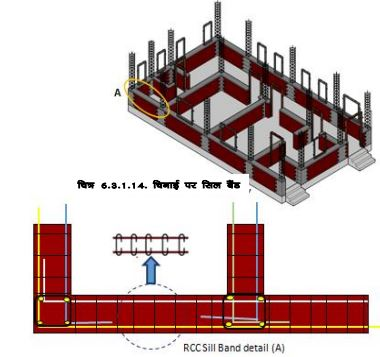

लिंटेल बैंड और छज्जे प्रदान करना
75mm मोटे आरसीसी बैंड खिड़की की चौखट, दरवाजे के लिंटेल और छत के स्तर पर उपलब्ध कराए गए हैं।
गैबल दीवारों में आरसीसी गैबल बैंड भी उपलब्ध कराए गए हैं। ये महत्वपूर्ण संरचनात्मक तत्व हैं जो सभी दीवारों को संबंधित स्तरों पर क्षैतिज रूप से बांधते हैं और भूकंप के दौरान भवन की रक्षा करते हैं।
ये बैंड दरवाजे की खिड़की के लिटंरो के रूप में भी काम करते हैं। इन आरसीसी बैंडों से दरवाजे और खिड़की पर सनशेड निकाले जा सकते हैं।
कोनों पर खडे सरिये नींव, दीवारों और छत को लंबवत रूप से बांधने के लिए इन बैंडों से गुजरती हैं।
आरसीसी बैंड का कोई भी सरिया कोनों पर समाप्त नहीं होता हैं। (चित्र.6.2.12.) सरिये कोनों पर मुड़े हुए हैं और साथ की दीवारों में कम से कम 0.5 मीटर तक जाते हैं।
लि ंटेल ब ैंड का महत्व:
-
1 संरचनात्मक मजबूती: दरवाजों ध्खिड़कियों के ऊपर भार को समान रूप से वितरित करता है, दरारों को रोकता है और इमारत की स्थिरता सुनिश्चित करता है।
2 भूकंप प्रतिरोध: इमारत की ताकत बढ़ाता है, भूकंप में संरचना के ढहने के जोखिम को कम करता है।
3 भार वितरण: दरवाजे और खिड़कियों से दूर दीवारों पर भार वितरित करता है।
चरण 8: लिंटेल बैंड और छज्जे की कास्टिंग
आरसीसी लिंटेल बैंड के साथ दरवाजे व खिड़कीयों के छज्जो की कास्टिंग
जब खड़े सरियो को विस्तारित करने की आवश्यकता होती है, तो नये सरिये को आरसीसी बैंड के भीतर से ही बांधी जा सकती हैं जैसा कि दिखाया गया है।
नये सरिये को लगभग 500mm बैंड में मोड़ा जाता है और पुराने सरिये से बांध दिया जाता है। जैसा कि दिखाया गया है, अब बैंड में सीमेंट कंक्रीट भरें।


आरसीसी लिंटेल बैंड के ऊपर छत के स्तर तक चिनाई जारी रखें।
हम सभी दीवारों को बांधने के लिए आरसीसी छत बैंड प्रदान करेंगे, जैसा कि हमने पहले आरसीसी बैंड प्रदान किए थे।
एक मंजिला इमारत के मामले में, 12mm व्यास के कोने वाले सरिये को छत बैंड में या आरसीसी या आरबीसी छत स्लैब के सरिये में मोड़ दिया जाता है। अन्यथा, सरिया ऊपरी मंजिल में कोनों से गुजरेंगा।
चरण 9: छत बिछाना
जोन । में लोग सपाट छत पसंद करते हैं। छत के ऊपर मोटी मिट्टी की परत होती है। सर्दियों में यह गर्म होती है, लेकिन इसे बार-बार मरम्मत और रखरखाव की जरूरत होती है। आप आरसीसी या आरबीसी छत बिछा सकते हैं और गर्मी बचने के लिए इसके ऊपर मोटी मिट्टी की परत चढ़ा सकते हैं।
अब हम पारंपरिक मिट्टी की ईंटों का उपयोग करके एक टिकाऊ प्रबलित ईंट कंक्रीट छत (आरबीसी) बनाएंगे, जैसा कि नीचे बताया गया है:
सबसे पहले हम प्रत्येक कमरे, रसोईघर, शौचालय बरामदा आदि लोहे की प्लेट या लकड़ी का शटरिंग प्रदान करेंगे, जो आरसीसी छत बैंड के स्तर पर बल्लियों के सहारे रूका हुआ होगा।
अब हम शटरिंग के चारों ओर लगभग 60mm का अंतर रखते हुए उस पर मिट्टी की ईंटें (300ग50ग150mm) रखेंगे।
सुझाव 1: लाहौल और स्पीति के लिए निर्माण संबंधी सुझाव
प्लिंथ लेवल पर बीम डालने के दो दिन बाद हम चिनाई शुरू कर सकते हैं।
जोन ए की बहुत ठंडी जलवायु में, हमें अच्छी इन्सुलेशन गुणों वाली मोटी दीवारों की आवश्यकता होती है। इस क्षेत्र में कम से कम 300mm मोटी मिट्टी की दीवारें या मिट्टी की ब्लॉक दीवारें आम हैं। चूँकि यह क्षेत्र मूलत: शुष्क है, मिट्टी की दीवारें नियमित मरम्मत और रखरखाव के साथ अच्छा प्रदर्शन करती हैं।
मिट्टी की दीवारों में पकी हुई लाल मिट्टी की ईंटों की दीवारों की तुलना में कम ताकत होती है, इसलिए इन दीवारों की स्थायित्व, मजबूती और रखरखाव की लागत कम करने के लिए विशेष सावधानी बरतनी पड़ती है।
हम भूकंप के दौरान अत्यधिक बेहतर प्रदर्शन के लिए आरसीसी सीमित फ्रेम के भीतर धूप में सुखाए गए मिट्टी के ब्लॉकों का उपयोग करके कन्फाइन्ड चिनाई नामक तकनीक से एक घर बनाएंगे। बाहरी दीवार की सतहों को ष्फेरो सीमेंट प्लास्टरष् द्वारा प्लास्टर किया जाएगा।
चरण 9: अधिरचना में चिनाई का कार्य
अब हम अपने भवन निर्माण पर वापस आते हैं:
हमने सीमेंट मोर्टार में कोर्स्ड रबल मेसनरी का उपयोग करके अपनी नींव का प्रारंभिक निर्माण पूरा कर लिया है और हमने अपने आरसीसी प्लिंथ बीम को भी कास्ट कर लिया है।
हम सबसे पहले आरसीसी प्लिंथध्बीम पर डोर फ्रेम रखेंगे और सुनिश्चित करेंगे कि चिनाई के दौरान सीमेंट कंक्रीट का उपयोग करके होल्ड फास्ट चिनाई में दबे हो।
प्लिंथ लेवल बीम के ऊपरए हम 30 ग 15 ग 15 cm ।
माप वाली धूप में सुखाई गई ईंटों का उपयोग करके चिनाई शुरू करेंगे।
हम अपनी ईंट की दीवार के कोर्स के दोनों सिरों पर सीमेंट की ईंटों का उपयोग करेंगे जो आरसीसी टाई कॉलम में जाती हैं और बाकी मिट्टी की ईंटों में होंगी।
सीमेंट की ईंटें चिनाई में दांत बनाती हैं जो आरसीसी टाई कॉलम में जाएंगी।
अब आरसीसी टाई कॉलम को कास्ट करने के लिए चिनाई में कंक्रीट के साथ अंतराल भरें। ईंट की दांतेदार चिनाई और आरसीसी टाई कॉलम के बीच एक अच्छा बंधन बनाएगी।
खिड़की के स्तर तक ईंट की चिनाई जारी रखें। सभी दीवारों और कॉलम को एक साथ बांधने के लिए 75mm मोटी आरसीसी सिल बैंड प्रदान करें।

आरसीसी सिल बैंड: टाई कॉलम से गुजरते हुए, सिल और लिंटेल स्तर पर दीवारों पर 12mm व्यास की 2 सरियें स्थापित करें। जैसा कि चित्र में दिखाया गया है, ये सरियें 20cm की दूरी पर 6ध्8mm व्यास वाले कनेक्टर से जुड़ी हुई हैं। कोनों और दीवार के जंक्शनों पर, छड़ों को आसन्न दीवारों में लगभग 50cm मोड़ा जाता है जैसा कि चित्र में दिखाया गया है, यह बहुत महत्वपूर्ण है। सिल और लिंटेल स्तर पर टाई कॉलम के साथ, बैंड को 75mm मोटाई में कंक्रीट किया गया है।
खिड़की के चौखट स्तर पर और दरवाजे के लिंटेल स्तर पर 75 से 100mm मोटे आरसीसी सिल बैंड और आरसीसी लिंटेल बैंड प्रदान किए जाते हैं।
सिल बैंड और लिंटेल बैंड में 12mm व्यास की 2 सरिये होते हैं जो 20cm के अंतराल पर 6mm व्यास के लिंक से बंधी होती हैं, जो घर के चारों ओर सभी दीवारों पर चलती हैं।
जैसा कि चित्र में दिखाया गया है, आरसीसी बैंड और आरसीसी बीम का सरियों टाई कॉलम के सरिये में लगभग 40cm मुडती हैं या साथ वाली दीवारों में कम से कम 50cm मुडती हैं
सरियों को कोनों पर समाप्त नहीं होना चाहिए। चित्र देखें।
आरसीसी बैंड और बीम बिना किसी रुकावट के सभी दीवारों पर बिछाए गए हैं।
निरंतरता के लिए दरवाजे के फ्रेम के मध्य होल्डफास्ट को आरसीसी सिल बैंड में जोड दिया गया है। उपयोग किया जाने वाला कंक्रीट ड20 ग्रेड, या 1 सीमेंट, 1.5 रेत व 3 भाग बजरी (10-12mm आकार) का है।
कंक्रीट को कॉम्पैक्ट करने के लिए वाइब्रेटर का उपयोग करें।
टाई कॉलम, बीम, आरसीसी लिंटेल बैंड और आरसीसी सिल बैंड का उपयोग करके, भूकंप, हवाओं और अन्य जमीनी गतिविधियों के खिलाफ लचीलापन बढ़ाने के लिए एक घर को सभी दिशाओं में मजबूति से एक साथ बांधा जाता है।


आरसीसी सिल बैंड के लिए सभी स्टील की छड़ें रखने और बांधने के बाद, खिड़की के फ्रेम स्थापित किए जाते हैं।
प्रत्येक खिड़की के फ्रेम में नीचे वेल्डेड दो होल्डफास्ट होते हैं, जिन्हें आरसीसी सिल बैंड में फसाया जाता जाएगा।।
इसी तरह, दरवाजे के फ्रेम के मध्य होल्डफास्ट भी आरसीसी सिल बैंड में फसे होते हैं। 1 भाग सीमेंट, 1.5 भाग रेत और 3 भाग बजरी (10-12mm आकार) के सीमेंट कंक्रीट मिश्रण का उपयोग किया जाता है।।
चरण 10: सिल बैंड के ऊपर चिनाई
सिल स्तर से ऊपर का कार्य:
आरसीसी सिल बैंड की ढलाई के दो से तीन दिन बाद हम इसके ऊपर चिनाई शुरू कर सकते हैं।
पहले से किए गए सीमेंट आधारित कार्य की पानी से तराई करना जारी रखें।
जब चिनाई लिंटेल बैंड स्तर तक पहुंच जाए, तो 2 सरिये 12 mm व्यास के प्रदान करें। लिंक के साथ बिल्कुल वैसे ही जैसे हमने सिल बैंड में प्रदान की थीं।
यदि आवश्यक हो तो टाई कॉलम सरिये की छड़ें बढ़ाएँ।
इस स्तर पर हम सीढ़ियों, मचानों(सवजि) और सनशेड आदि की लैंडिंग के लिए शटरिंग और सरिया प्रदान करेंगे।
टाई कॉलम और आरसीसी लिंटेल बैंड के दो किनारों पर शटरिंग प्रदान करें।
टाई कॉलम, लिंटेल बैंड, सनशेड, लैंडिंग आदि में वाइब्रेटर का उपयोग करके एक बार में सीमेंट कंक्रीट भरें।